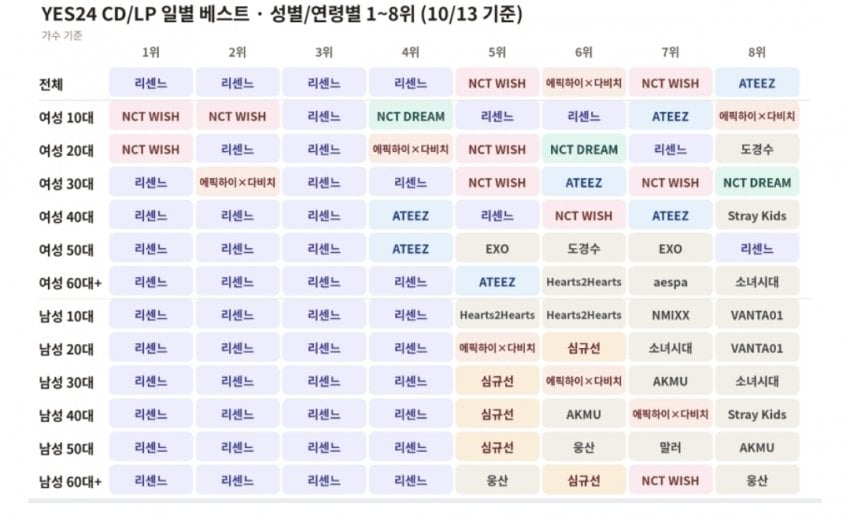

생각보다 개틀딱 팬덤은 아닌가봄

생각보다 개틀딱 팬덤은 아닌가봄
에픽하이랑 다비치는 뭐했나
5위는 뭔데 심규선이 남심 올킬이네
비율로보면 틀딱 팬덤이던데
약간 무한도전 감성에 초창기는 짠한 느낌도있어서 전연령이 좋아하는듯 그리고 한명씩 캐릭터만들어주는 pd가 감ㅈㄴ있음
뭐야 규선 누나 남초 픽이었어? 역시 남자들은 댓글을 안 쓸 뿐이구나
이거는 비율로 봐야지 ㅋㅋ
20대는 50%가 리센느면 60대는 99%가 리센느일걸
그 얘기는 원래 음방 시장에 통계로 잡히지도 않던
5-60대가 들어 왔다는 얘기네
그냥 원더걸스 이후 대국민 아이돌임
sns에서 틀딱픽, 아재픽이라고 선동하는 1020 여자과 타팬 헛소리에 낚일 필요 없음
심규선이 누구지하고 보니 예전에 자주듣던 루시아였네
60대+ ㅋㅋㅋㅋ
역주행 전에도 초동 10만 뽑던 애들인데 이번엔 얼마나 나오려나 ㄷㄷ
심규선 뭐 나왔나보네